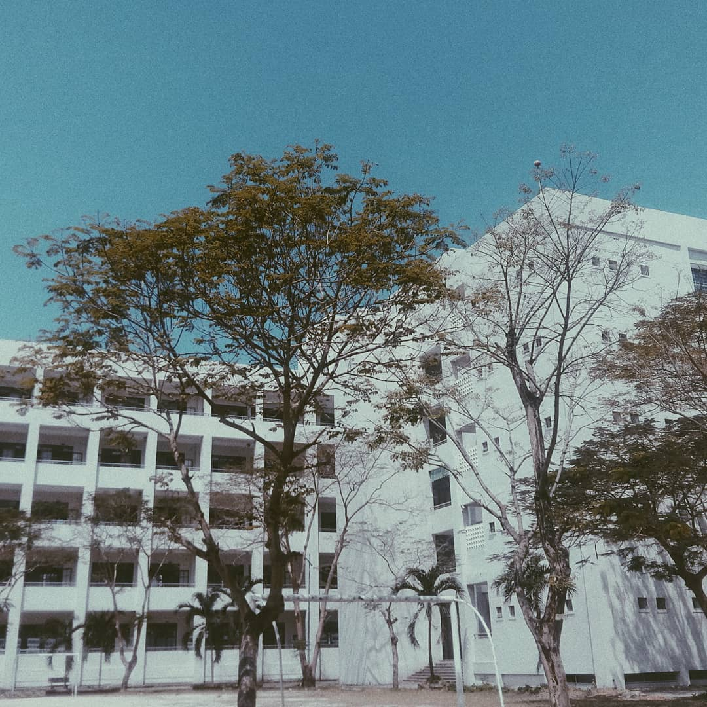
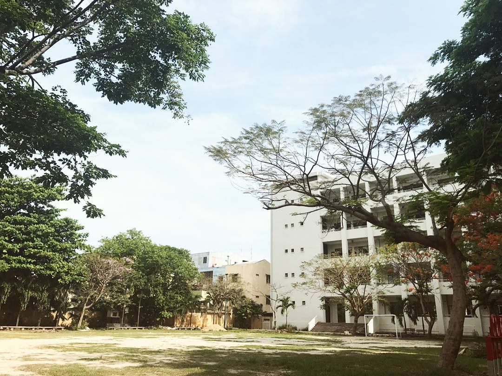
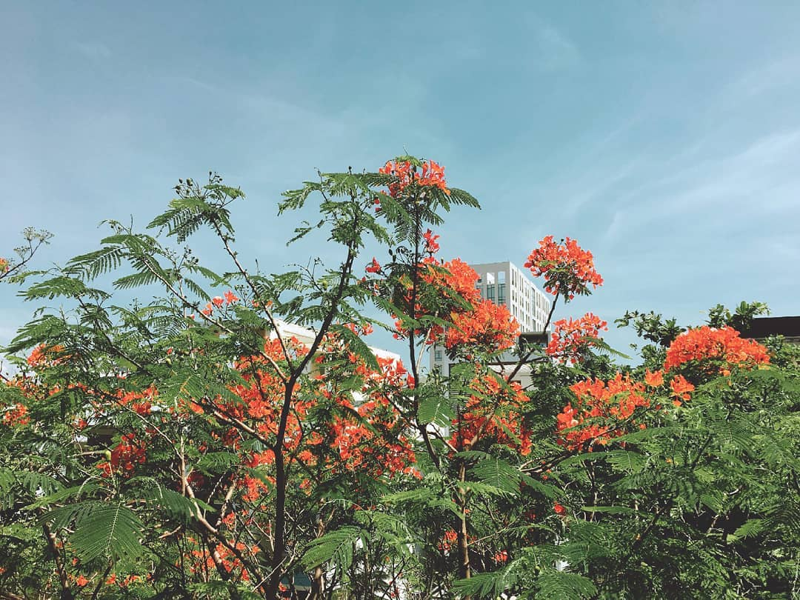

Đây sẽ là loạt series về những năm tháng thanh xuân thời đại học của tui, với rất rất nhiều trãi nghiệm khó quên, đó là hạnh phúc, vui sướng, mà đau đớn đắng cay cũng có. Và đan xen trong series này là các bài học mà tui tự chiêm nghiệm rút ra được, hy vọng bạn đọc thấy có ích :D
quay lại thời cấp 3
Trước khi bắt đầu kể về chuỗi ngày tháng đại học thì tui sẽ giới thiệu nhẹ về bản thân tui năm 18 tuổi, lúc đó tui thế nào, tại sao tui lại chọn đh bách khoa đà nẵng để thi vào.
Ừm thì tui xin giới thiệu luôn trường cấp 3 của tui là Phan Châu Trinh, nếu bạn đọc là người đà nẵng thì chắc hẳn sẽ biết trường này rồi, lúc bấy giờ nó rank #2 ở Đà nẵng đấy, haha. Người ta nói cấp 3 là khoảng thời gian đẹp nhất thời học trò, nhưng hồi đó tui còn khờ với đần lắm nên chưa tận hưởng được hết, tui thậm chí nhát cấy đến nổi chả có được mối tình gà bông nào cả.

Dưới bầu trời ấy, có một người bước vào cuộc đời của một người…
Nhưng bù lại tui may mắn có đc những người bạn thân mà đến tận bây giờ vẫn chơi với nhau, vẫn lai rai vài két bia tâm sự chuyện đời =))
Thôi quay lại chủ đề, rồi thì cũng như bao bạn trẻ khác, tui lớp 12 vẫn hăm biết mình thích cái gì, giỏi cái gì để chọn trường ĐH phù hợp. Chưa kể sau những lần thi thử được những 8 điểm, 9 điểm (ba môn công lại nha :D) lại khiến tui tự tin rằng học hành éo gì tầm nãy nữa, quyết định chắc suất vào cao đẳng cmnr. Nhưng đời éo cho tui làm vậy, sau lần thi thử cuối cùng vào tháng 4 có tiến bộ hơn so với trước tận 1 điểm, tổng điểm là 9, tui thực sự thấy có động lực để try hard tiếp, lol đùa thôi, lúc đó chỉ có thấy nhục nhã, xấu hổ, nhiều ngày tiếp theo đó thực sự stress với tui, đó là một tuần dằn vặt bản thân gê gớm. Sau nhiều đêm suy nghĩ, vì tui không muốn xấu hổ, lại càng không muốn ba mẹ mình xấu hổ vì mình, nên từ tháng 4 đến tháng 7 trc ngày thi, tui lên kế hoạch cày lại từ đầu, và đã cày như một con trâu điên, sáng học lý thuyết, chiều giải đề, lặp đi lặp lại liên tục trong 3 tháng.

Những ngày hè nắng gắt vác đít đi học thêm
Cũng trong thời gian ấy, tui cân nhắc về việc chọn trường, lúc đầu tui thích kinh tế hơn, vì tui đơn giản lúc đó nghỉ rằng kỹ thuật vừa thô vừa khó, còn kinh tế thì học nhẹ nhàng, lại nhiều gái, sống nhàn hạ vậy còn gì bằng. Thế là tui đem lý do đó trình bày với mẹ tui, nhưng chưa kịp giải thích hết thì bị shutdown ngay tại chỗ, mẹ bảo tui mày học cái đó sau ni cạp đất mà ăn hàa, nhìn đù đù như mày thì làm kinh tế được cái gì chứ, cứ chọn bách khoa cho tao. Lúc đó tui cũng tức lắm, tại vì hồi đó tui được xem mấy cái clip với các bài báo về theo đuổi đam mê, tui ghiền, tui muốn chứng tỏ với mẹ rằng phải theo đuổi đam mê, thành công sẽ theo đuổi bạn các kiểu, nhưng bây giờ ngẫm lại nếu tui lúc đó theo đuổi cái đam mê ấy thì chắc giờ này ko phải là thành công mà là bọn đòi nợ theo đuổi tui rồi =))
Sau khi bị bắt thi bách khoa, tui đành lặng lẽ lên google search “làm thế nào để bỏ nhà đi bụi”, haha, đùa thôi, tui search “học bách khoa ngành nào lương cao”. Top kết quả trả về đứng đầu là công nghệ thông tin, điện tử, cơ khí ô tô, tự động hóa. Sau khi có được kết quả, tui search điểm đầu vào mỗi ngành của các năm trước, biết xong tui lặng lẽ gạch công nghệ thông tin ra khỏi list luôn, vì đó là ngành có điểm đầu vào cao nhất, mà sức học tui lúc bấy giờ là ko thể nào đủ đc. Thế là còn 3 lựa chọn, tui ngẫm rằng, tui chả giỏi hình học, vật lý cho lắm, nên tui cũng ngán cái ngành cơ khí đó, list bây giờ rút lại còn 2 ngành là điện tử và tự động hóa. Tui quyết định chọn tự động hóa vì hồi đó trên ti vi có chương trình how it’s made, xem các dây chuyền trong series sản xuất khiến tui thấy thích thú, nên tui nghỉ rằng học ngành ni xong chắc ra trường tui cũng có khả năng thiết kế các dây chuyển như trong series, vậy là tui quyết định điền ngành này vào hồ sơ.

Mùa hè - mùa phượng nở - mùa chia ly
Thời gian thắm thoắt trôi, rồi cuối cùng ngày thi Đh cũng đến, nhưng tui lúc này khác tui lúc 3 tháng trước, tui mạnh dạn bước vào phòng làm quen với các em gái, hùng hồn chém gió cùng các đối thủ cho họ khiếp sợ. Tui tự tin làm bài, vui cười khi ra phòng thi. Và một tháng sau, kết quả đã có, những ngày gian khổ đã đc đền đáp xứng đáng các bạn à, tui đã đậu Đh, tui đã làm được, tui đã làm một thứ mà tui khó tin ở bản thân mình, cảm giác lúc đấy thần kỳ lắm, phê như chơi cỏ ấy =)) Tui mua sắm sách vở, bút viết laptop để bắt đầu chặng đường tiếp theo trong cuộc đời mình, đại học, một trong những khoảng thời gian tuyệt vời nhất đời tui…
kết
Vậy là các bạn đã biết lý do tại sao tui chọn bách khoa đà nẵng rồi chứ, cùng tiếp tục phần 2 của series Những năm tháng đại học của tui nhé.